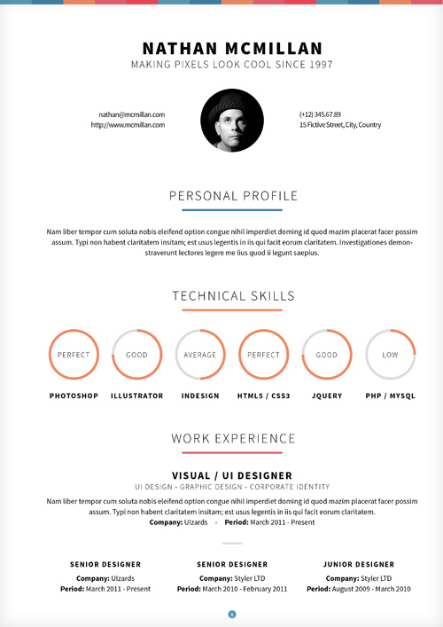
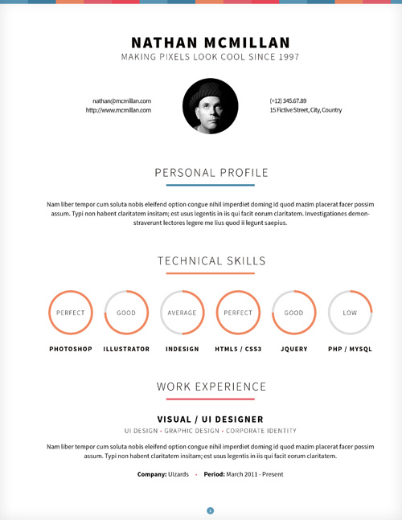

Project name: Curriculum
Last updated: 8 September 2013
Version: 1.0
Thank you for purchasing this template. The current documentation file is meant to provide you with the help you need to setup and customize your new newly purchased template. If you find yourself in need of help that you cannot get through the information presented here, feel free to address your questions via the emailing system on QBKL Studio's ThemeForest profile page.
If you are looking for more custom work, be it web design, logo design or custom WordPress project, make sure to check out QBKL Studio's website.
Installing Curriculum is a very simple and straight forward job. Please consider the following:
PHP 5 Support
In order for the contact form of the template to function properly, your server needs to be setup to interpret PHP scripts, but that's a given with most of today's hosting companies.
Setting up the template is a very easy job! Basically, all you have to do is to move (ONLY) the contents of the _template folder to your FTP account, with or without the _documentation folder.
We suggest adjusting the template settings before uploading.
Setting up Curriculum is a really straight forward job and only involves adjusting the contact form settings. After that, your template is ready to use.
The contact form works out of the box and is equipped with a live field validator to make sure all required fields are filled in with proper information. All you need to do is to set up your own e-mail address for delivery and the subject of the e-mail. To do so you need to locate and open for editing the following file: _template/assets/php/contact-form-process.php.
Once you've located and opened the file, look for the following lines of code and adjust them to your needs:
/* Setup your email address to receive emails */
define( 'WEBMASTER_EMAIL', 'username@emailprovider.com' );
define( 'EMAIL_SUBJECT', 'New message received' );If you wish to edit the default field texts and validation messages, locate and open for editing the following file: _template/assets/js/jquery.validation.settings.js. Throughout this file you will find a series of messages that you can adjust/translate to your needs.
Below, you will find information on how to set up the information in your template and use the column grid properly so that your resume will look good no matter the resolution or device it is viewed on. Let's start with the foundation: the columns.
The template uses a custom grid. It's a 6-column responsive grid that scales down from 1200px to 320px (mobile devices). It uses padding on columns to create gutters instead of margin and eliminates the need to add classes like last to every last columns in a row. Here's a list of the available column classes and their results:
col-full - creates a column that takes up 100% of the available space;col-1-2 - creates a column that takes up 1/2 of the available space;col-1-3 - creates a column that takes up 1/3 of the available space; col-2-3 - creates a column that takes up 2/3 of the available space;col-1-4 - creates a column that takes up 1/4 of the available space;col-3-4 - creates a column that takes up 3/4 of the available space;col-1-5 - creates a column that takes up 1/5 of the available space;col-2-5 - creates a column that takes up 2/5 of the available space;col-3-5 - creates a column that takes up 3/5 of the available space;col-1-6 - creates a column that takes up 1/6 of the available space;Each template's section content is surrounded by a <div class="container">, which basically adjusts the template content width based on screen resolution and device and thus, the grid readjusts itself.
Let's look at a few examples of column usage so that you get a grasp of how the grid works
This can be obtained by using this piece of code
<div class="row">
<div class="column one-third">First 1/3 column</div>
<div class="column one-third">Second 1/3 column</div>
<div class="column one-third">Third 1/3 column</div>
</div>This can be obtained by using this piece of code
<div class="row">
<div class="col-1-2">1/2 column</div>
<div class="col-1-4">1/4 column</div>
<div class="col-1-4">1/4 column</div>
</div>In some cases, inside one column you need to add more rows with different numbers of columns inside. The following example creates a two column level-1 layout, a 1/3 column and a 2/3 column. The 2/3 column will hold a couple of rows, the first one with 4 equal 1/4 columns and the second split equally in half. Notice that he nested column will take up the available space, so on level-2 columns you'll get equal fourths of their container which is 2/3 out of the whole template's width.
<div class="row">
<div class="col-1-3">1/3 column</div>
<div class="col-2-3 col-wrap">
<div class="row">
<div class="col-1-4">1/4 column</div>
<div class="col-1-4">1/4 column</div>
<div class="col-1-4">1/4 column</div>
<div class="col-1-4">1/4 column</div>
</div>
<div class="row">
<div class="col-1-2">1/2 column</div>
<div class="col-1-2">1/2 column</div>
</div>
</div>
</div>Please note:
A. We wrap each column set in a <div class="row">. This ensures auto-clearing of all columns inside so that the layout doesn't break.
B. When nesting columns, the container column takes an additional class, col-wrap like here: <div class="col-2-3 col-wrap">. This class eliminates padding of the container column - a 2/3 column - allowing the content inside to take all its available space and inner columns to properly aling to the main grid.
By default, the resume consists of 7 sections, built around the column grid described above.
For a better understanding of how sections are created, let's have a look at the most basic section of the resume, the "Personal Profile":
<!-- Start: Personal profile -->
<section id="profile" class="section">
<div class="container">
<div class="row">
<div class="col-full">
<h2 class="section-title">Personal Profile</h2>
<div class="centered line"></div>
</div>
</div>
<div class="row section-content">
Section content here
</div>
</div>
</section>
<!-- End: Personal profile -->You'll notice that as with all other sections, for easier identification we've commented the beginning and ending of the section. Each section is wrapped in a HTML 5 tag <section id="about" class="section">. When creating new sections, this format is required. This means that while you should keep all ID's unique (they are used by the top navigation), you should also keep the classes identical. The section class although undefined in the CSS file, has been used throughout the resume on all sections with the exception of the Intro. This way, with the proper knowledge you could add CSS definitions in the style.css to target only these sections.
With the help of the columns grid structure we have described earlier, you can add different formats and looks to each section's content, as we did with the demo index.html file.
We won't get too in-depth with every section's description as most of them are pretty straight forward, but we'll provide a deeper look within the following sections: Introduction, Skills and Portfolio and some other elements like the full page background image in the Intro section or the social media links in the Personal Profile.
Let's have a look at the complete code of the Intro section:
<!-- Start: Intro -->
<section id="intro" class="fx-backstretch">
<div class="info">
<div class="container">
<div class="row">
<div class="col-full"><h1>Nathan M<span class="cool">c</span>Millan</h1></div>
</div>
<div class="row"><div class="col-1-4 centered line"></div></div>
<div class="row">
<div class="col-full"><h4>Making pi<span class="cool">x</span>els look cool since 1997</h4></div>
</div>
</div>
</div>
<nav id="nav">
<!-- The content between <span> </span> tags will be hidden on mobile version -->
<ul class="clearfix">
<li><a href="#profile">Pro<span>file</span></a></li>
<li><a href="#skills">Ski<span>lls</span></a></li>
<li><a href="#experience">Exp<span>erience</span></a></li>
<li><a href="#education">Edu<span>cation</span></a></li>
<li><a href="#portfolio">Por<span>tfolio</span></a></li>
<li><a href="#contact">Con<span>tact</span></a></li>
</ul>
</nav>
</section>
<!-- End: Intro -->The main areas of this section are:
H1 tagsH4 tagsUL inside the NAV tagsNOTE Check out the <section id="intro" class="fx-backstretch"> opening tag. The fx-backstretch class is targeted by the jQuery script "Backstretch" which applies it a fully stretched image.
By default, all the scripting required for this effect to work is included but not active. In order to activate it and customize the image you wish to use, locate and open for editing the following file: _template/assets/js/custom.curriculum.js, then locate the following line of code:
$( '.fx-backstretch' ).backstretch("assets/img/backstretch.jpg"); // Replace backstrech.jpg with your own image if neededIf you wish to disable this effect you can either remove the fx-backstretch class from the Intro section or comment the line above in the custom.curriculum.js file with 2 slashes at its start. You can obviously replace the bundled image with your own.
By the way, the image provided with this package has been shot by QBKL in the Carpathian Mountains in Busteni, Romania and if you wish to use it - only in conjunction with this template - feel free to do so. You are not allowed though to redistribute it or resell it, thus it is free for personal use, or if you use this template for your client, you are still allowed to use it. These moutains are beautiful and you should visit them.
You can find the image used in the ThemeForest item preview here
Setting up the navigation is pretty straight forward. Have a look at the UL inside the NAV tags. Each navigation item takes the following format:
<li><a href="#profile">Pro<span>file</span></a></li>The <a href="#profile"> is an internal anchor pointing to <section id="profile" class="section"> section. Notice the <span> tag inside the link? On low resolutions, the letters inside those tags will be hidden. This means that on mobile, only the first three letters of your buttons will show up. Make them count.
Locate the following lines of code in the index.html file to add in your own social media and contact information:
<ul class="social-links clearfix">
<li><a href="#" title="Twitter"><i class="icon-twitter-sign"></i></a></li>
<li><a href="#" title="Facebook"><i class="icon-facebook-sign"></i></a></li>
<li><a href="#" title="Google Plus"><i class="icon-google-plus-sign"></i></a></li>
<li><a href="#" title="Flickr"><i class="icon-flickr"></i></a></li>
<li><a href="#" title="Dribble"><i class="icon-dribbble"></i></a></li>
<!--<li><a href="#" class="rotate" title="Github"><i class="icon-github-sign"></i></a></li>-->
<li><a href="#" title="Instagram"><i class="icon-instagram"></i></a></li>
<li><a href="#" title="Pinterest"><i class="icon-pinterest-sign"></i></a></li>
<li><a href="#" title="Tumblr"><i class="icon-tumblr-sign"></i></a></li>
<li><a href="#" title="LinkedIn"><i class="icon-linkedin-sign"></i></a></li>
</ul>NOTE In the demo file we have included links and icons for the most common profiles used in resumes. Throughout the template you'll notice different icons used. These icons are generated with the help of the iconic font Font Awesome. For more information on how to use it to replace the icons packed or add new ones, please visit Font Awesome's website where you will find a complete documentation and lots of usage examples.
Setting up the circular skill levels is pretty easy. Let's have a look at one of the skills' code:
<!-- Start: Skill -->
<div class="col-1-6 skill">
<div class="skill-pie" data-percent="90">90%</div>
<h4>Photoshop</h4>
</div>
<!-- End: Skill -->Notice the data-percent="90" attribute. Its value indicates the script how much of the circle should be activated / color filled. In this case, 90%
The portfolio consists of 2 main sections: the filters area and the projects area. Let's have a look at each of them.
Here's a sample code extracted from the index.html file which handles the display of filters:
<!-- Portfolio filters -->
<ul class="filters">
<li class="filter" data-filter="all">All</li>
<li class="filter" data-filter="port-objects">Objects</li>
<li class="filter" data-filter="port-food">Food</li>
<li class="filter" data-filter="port-street">Street Art</li>
<li class="filter" data-filter="port-objects port-food">Objects & Food</li>
</ul>NOTE The portfolio's filtering capability is handled by a neat jQuery plugin called "MixItUp" about which you can learn more on its dedicated website.
Looking at the code you'll notice the data-filter attribute. Each filter link, once clicked will hide all projects that don't have the class name contained in the data-filter attribute. For example, if you click on the "Food" filter, its attribute would be data-filter="port-food". This means that only the projects defined like the one below would be displayed:
<div class="col-1-6 project port-food"><a href="assets/img/big-3.jpg" title="Project 3"><img src="assets/img/thumb-3.png" alt=""></a></div>Notice the class port-food on the project container DIV? That's what the filter targets. You can of course use multiple filters and create combos like we did with our last filter.
Adding portfolio items is pretty simple. Let's have a look at a sample portfolio item's code:
<div class="col-1-6 project port-food"><a href="assets/img/big-3.jpg" title="Project 3"><img src="assets/img/thumb-3.png" alt=""></a></div>Each item's code consists of three HTML elements, a containing DIV, a link which targets the large image pop-up
- big-3.jpg in our case - and a thumbnail image - thumb-3.png. When adding thumbnails, we recommend following our sample settings and creating rounded transparent PNG files with a diameter of 130 pixels. This ensures a good visual balance.
On the container DIV you can see the following 3 classes: col-1-6 (sets each item to a sixth of the available space), project (required for the gallery pop-up to work and also for styling) and in our case, the port-food class, which is used by the filters to hide/display portfolio items.
The responsive lightbox pop-ups are handled by the Magnific Popup jQuery plugin and are defined in the JavaScript file: _template/assets/js/custom.curriculum.js. You can learn more about Magnific Popup here.
Please refer to the Settings section to learn about how to set up your contact form.
Packed with this template you will find two bonus PSD items - 300DPI CMYK - located in the _print folder:

Printable resume (A4)

Printable resume (Letter)
For more help you are encouraged to use the comment system of the item's download page on ThemeForest or the emailing system on QBKL's profile on ThemeForest.
We at QBKL would like to extend our thanks to the developers of jQuery, jQuery form plugin, jQuery form validation plugin, Scott Robbin for the Backstretch jQuery Plugin, Barrel LLC for the MixItUp jQuery Plugin, Dmitry Semenov for the Magnific Popup jQuery Plugin, Easy Pie Chart by Robert Fleischmann, One Page Nav by Trevor Davis, Paul Hunt for the gorgeous Source Sans Pro font and Font Awesome for the beautiful iconic font
Documentation file resources: